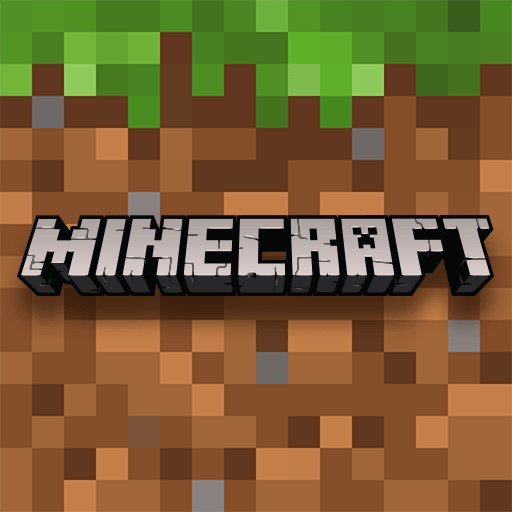

Minecraft es un videojuego de construcción, de tipo mundo abierto o sandbox creado originalmente por el sueco Markus Persson conocido como "Notch" y posteriormente desarrollado por su empresa, Mojang Studios. Fue lanzado públicamente el 17 de mayo de 2009, después de diversos cambios fue lanzada su versión completa el 18 de noviembre de 2011.
El 15 de septiembre de 2014, fue adquirido por la empresa Microsoft por un valor de 2500 millones USD. Este suceso provocó el alejamiento de Markus Persson de la compañía. El 1 de noviembre de 2016 Microsoft anunció el lanzamiento de la versión completa de Minecraft Education Edition.
Ediciones de minecraft:
Java edition
Bedrock edition
Legacy edition
Education edition

Modos de juego
Supervivencia:
Es el modo principal. Tenemos que conseguir recursos y sobrevivir al ataque de múltiples criaturas que surgen en la oscuridad, hasta que logremos vencer al dragón. Nuestro personaje cuenta con diez corazones de vida para conseguir su objetivo.
Creativo:
Las reglas de juego las ponemos nosotros y podemos construir libremente. Tenemos recursos ilimitados de todos los bloques y objetos del juego. No somos atacados por ningún monstruo, ni recibimos ningún tipo de daño.
Aventura:
Destinado para los jugadores que se dedican a crear mapas para otros usuarios. No podemos romper bloques para hacer construcciones, sólo podemos romperlos si contamos con la herramienta adecuada. En algunas versiones, no se puede modificar la dificultad.
Modo Espectador:
Si nos matan, podemos seguir jugando, pero sí ver la partida.
Jugabilidad
Minecraft es un juego de mundo abierto, por lo que no posee un objetivo específico, permitiéndole al jugador una gran libertad en cuanto a la elección de su forma de jugar. A pesar de ello, el juego posee un sistema de logros. El juego se centra en la colocación y destrucción de bloques,
siendo que este se compone de objetos tridimensionales cúbicos, colocados sobre un patrón de rejilla fija. Estos cubos o bloques representan principalmente distintos elementos de la naturaleza, como tierra, piedra, minerales, troncos, entre otros.
Nether Update
La actualización Nether es una actualización importante con el tema de renovar el Nether. Agrega múltiples características nuevas a esta dimensión, como nuevos biomas, nuevos mobs, estructuras y musicalización de fondo al igual que agrega un nuevo material llamado netherite el cual es mas duro que el diamante y se pueden relizar armaduras y herramientas con el.
Algunos biomas son:
Bosque Carmesí
Bosque deformado
Valle de las almas
Deltas de basalto